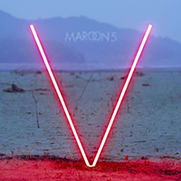

V (Five)
Erscheinungsdatum: 29.08.2014
Produzenten: Ammo, Astma & Rocwell, Benny Blanco, Johan Carlsson, Cirkut, Jason Evigan, Rodney "Darkchild" Jerkins, Shellback, Ryan Tedder

1. Maps
2. Animals
3. It Was Always You
4. Unkiss Me
5. Sugar
6. Leaving California
7. In Your Pocket
8. New Love
9. Coming Back For You
10. Feelings
11. My Heart Is Open
12. This Summer
go back